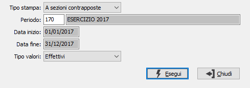

Stampa valori
Il programma consente la stampa, anche in anteprima, di un report relativo ai valori associati ai conti del piano dei conti aziendale.

TIPO STAMPA:definisce la tipologia di stampa: a sezioni contrapposte oppure a sezioni divise.
PERIODO: inserire il periodo per cui si desidera effettuare la stampa. L'inserimento del periodo determina la valorizzazione delle date di stampa. Sul campo sono attive le funzioni di ricerca (F9) sulla tabella stessa.
TIPO VALORI: indicare quali valori si desidera modificare: i valori effettivi, quelli rettificati, quelli Preventivi oppure tutti; nel caso si scelga di stampare tutti i valori non sarà possibile effettuare la stampa a sezioni contrapposte.
La pressione del pulsante Esegui determina l’esecuzione della stampa.